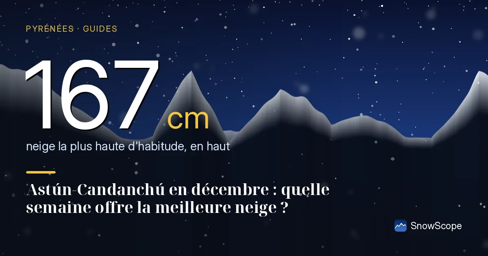

Astún-Candanchú en décembre : quelle semaine offre la meilleure neige ?
Si vous préparez une semaine en famille à petit prix en décembre à Astún-Candanchú, en Espagne, réservez du 22 au 28 décembre et restez sur les pistes de mi-pente et du haut. Début décembre, le bas des remontées est souvent maigre ; la dernière semaine complète du mois donne la meilleure chance de neige naturelle.
Consultez les prévisions neige en temps réel pour Astún-Candanchú sur l'application SnowScopeHauteurs de neige, alertes poudreuse et carte 3D, gratuitement.
Deux stations sur un seul forfait famille
Astún-Candanchú relie deux stations en Espagne avec un forfait commun. Le domaine skiable balisé compte 35 km de pistes et 17 remontées, s'élevant de 1 659 m à 2 272 m (613 m de dénivelé). Pour la saison 26-27, les prix vérifiés sont de 54,50 EUR en ligne ou 59,50 EUR au guichet pour un forfait journée adulte.
Aucun forfait 6 jours n'est vendu pour une semaine en famille. À la place, un forfait 5 jours adulte acheté en ligne pour la saison 26-27 coûte 237,00 EUR, ce qui permet de connaître le coût des billets avant de choisir vos dates.

Attendre fin décembre
Notre historique de neige de 46 hivers passés (1980-81 à 2025-26) montre que début décembre est souvent peu enneigé à la base de 1 659 m. La part des hivers passés avec 30 cm ou plus au pied des remontées est de 20 % du 1er au 7 décembre, 33 % du 8 au 14 décembre, 35 % du 15 au 21 décembre et 41 % du 22 au 28 décembre. Pour 50 cm ou plus, la base n'atteint que 9 %, 13 %, 15 % et 17 % sur ces quatre semaines.
Plus haut, la semaine du 22 au 28 décembre se distingue pour les familles. À mi-montagne (1 965 m), 30 cm ou plus apparaissent dans 35 %, 39 %, 46 % et 63 % des hivers passés sur les quatre semaines de décembre, tandis que 50 cm ou plus atteignent 17 %, 30 %, 28 % et 37 %. Au sommet à 2 272 m, 30 cm ou plus atteignent 52 % du 1er au 7 décembre, 57 % du 8 au 14 et du 15 au 21 décembre, et 67 % du 22 au 28 décembre (50 cm ou plus : 24 %, 30 %, 39 % et 48 %).
Le 13 novembre 2026, l'estimation de neige actuelle est de 0 cm à la base, à mi-montagne et au sommet, avec 0 cm de neige fraîche prévue les 7 prochains jours à la base et à mi-montagne, et 7 cm au sommet. Les perspectives sur deux semaines (du 13 au 26 novembre 2026) donnent une fourchette de 5 cm à 30 cm au-dessus de la mi-montagne, indiquant un début lent.
Neige à la base, mi-montagne et au sommet
Les profondeurs habituelles en décembre montrent pourquoi l'altitude compte. En décembre habituel, la neige atteint en moyenne 18 cm à la base (13 cm le 15 décembre), 28 cm à mi-montagne (20 cm le 15 décembre) et 38 cm au sommet (29 cm le 15 décembre). Un décembre maigre (1 hiver sur 10) tombe en dessous de 2 cm, 5 cm et 6 cm, et 1989-90 a affiché une moyenne de 1 cm à la base et 2 cm plus haut.
Un décembre riche (1 hiver sur 10) dépasse 58 cm à la base, 80 cm à mi-montagne et 104 cm au sommet ; 2021-22 a enregistré une moyenne de 85 cm, 114 cm et 142 cm. La neige persistante habituelle commence le 7 novembre (base), le 5 novembre (mi-montagne) et le 3 novembre (sommet), culminant à 94 cm, 131 cm et 167 cm.
Comparaison avec Baqueira Beret
Baqueira Beret en Espagne est beaucoup plus grande, avec 154 km de pistes et 36 remontées de 1 504 m à 2 600 m (1 096 m de dénivelé). Pour la saison 2026-27, un forfait journée adulte 'Baqueira Ticket' coûte 74,00 € (70,00 € avec la carte rechargeable 'Baqueira Pass') et un forfait 6 jours 'Baqueira Ticket' coûte 359,00 €, contre 54,50 EUR (journée en ligne) et 237,00 EUR (5 jours en ligne) à Astún-Candanchú.
Dans notre historique de neige, Astún-Candanchú a une neige de décembre plus profonde que Baqueira Beret à tous les niveaux. Baqueira Beret a une moyenne de 8 cm à sa base de 1 504 m (peu de neige 0 cm, beaucoup au-dessus de 37 cm), 20 cm à 2 052 m (peu de neige en dessous de 2 cm, beaucoup au-dessus de 56 cm) et 30 cm à 2 600 m (peu de neige en dessous de 3 cm, beaucoup au-dessus de 77 cm). Ses parts pour 30 cm ou plus du 22 au 28 décembre sont de 20 % (base), 41 % (mi-montagne) et 59 % (sommet), en dessous des 41 %, 63 % et 67 % d'Astún-Candanchú.
Moins de neige en décembre ces dernières années
En planifiant, rappelez-vous que la neige de décembre a diminué ces derniers hivers. Au milieu des 15 premiers hivers (1980-81 à 1994-95), Astún-Candanchú affichait une moyenne de 20 cm à la base, 29 cm à mi-montagne et 39 cm au sommet. Lors des 15 derniers hivers (2011-12 à 2025-26), ces chiffres sont tombés à 15 cm, 23 cm et 32 cm, correspondant au mois de décembre dernier (2025-26).
Conseils aux skieurs
- Choisissez la semaine du 22 au 28 décembre pour votre semaine en famille, quand la mi-montagne atteint 30 cm ou plus dans 63 % des hivers passés et le sommet dans 67 %.
- Skiez principalement à mi-montagne (1 659 m) et au sommet (2 272 m), car la base à 1965 m ne compte que 18 cm en moyenne en décembre.
- Réservez le forfait sur le site officiel pour payer 54,50 EUR pour 1 jour au lieu de 59,50 EUR, ou 237,00 EUR pour 5 jours.
- Consultez la bulletin d'avalanche avant toute sortie hors-piste, surtout après de la neige fraîche sur les pentes supérieures.
Autres cartes (sites externes)
Références et crédits
- Astún, official lift pass prices (tarifas 26-27) astun.com/forfaits/
- Baqueira Beret, official prices (tarifas), season 26-27 www.baqueira.es/es/tarifas
- SnowScope, December snow at three heights and today's snow map snowscope.app/
À propos de ces chiffres
Neige actuelle et tendance à deux semaines : prévisions SnowScope (tendance ECMWF et GFS, une fourchette, pas une promesse). Remontées et pistes : cartographie OpenSkiMap. Prix : pages officielles des stations ci-dessous, lues le 2026-11-13 ; les prix peuvent changer, vérifiez avant de réserver.
Bulletins d'avalanche officiels: AEMET – Boletín de peligro de aludes (Pirineo aragonés)
Citer ce bulletin
Pour la recherche, l'enseignement ou la presse : chiffres et graphiques réutilisables librement sous CC BY 4.0 avec cette citation.
SnowScope (2026), Astún-Candanchú en décembre : quelle semaine offre la meilleure neige ?, https://snowscope.app/blog/fr/2026/11/astun-candanchu-december-ski-joint-pass-snow-2026.html, consulté le 2026-11-14
SnowScope (Atlas Labs). (2026, November 14). Astún-Candanchú en décembre : quelle semaine offre la meilleure neige ?. SnowScope snow reports. https://snowscope.app/blog/fr/2026/11/astun-candanchu-december-ski-joint-pass-snow-2026.html
BibTeX
@misc{snowscope2026astuncandanchudecembersk,
author = {{SnowScope (Atlas Labs)}},
title = {Astún-Candanchú en décembre : quelle semaine offre la meilleure neige ?},
year = {2026},
month = nov,
howpublished = {\url{https://snowscope.app/blog/fr/2026/11/astun-candanchu-december-ski-joint-pass-snow-2026.html}},
note = {Published 2026-11-14 14:41 UTC; accessed 2026-11-14}
}· CC BY 4.0 · Méthodes, données et outils →
Astún-Candanchú : neige et température selon l'altitude, cet hiver vs l'hiver dernier (outils) →
Suivre Astún-Candanchú
Gratuit : un message quand la neige arrive, et la météo chaque matin.
Autres bulletins neige

Moins de jours de neige aux 120 points étudiés dans les Pyrénées depuis 1980-81, surtout sous 1 500 m : notre série de 46 hivers et la recherche.

Trois hivers maigres d'affilée ont pris fin en 2025-26 ; cet automne a commencé normalement.